Inicio
Modern Warfare
Fusil
SubFusil
Escopetas
Ametralladora Ligera
Fusil Tactico
Fusil de Precision
Armas Cortas
Estas son las mejores
clases de armas:
Call Of Duty®
Modern Warfare II
1. Armamento: Fusil
Kilo 141
Modo de disparo: Automatico
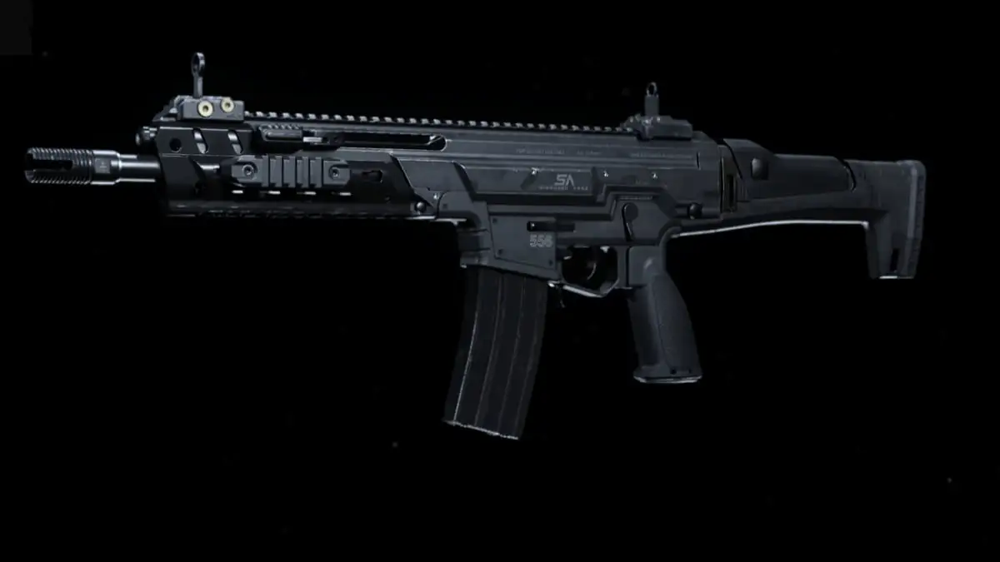
Boca de Cañon: Silenciador Monolítico
Mira: Mira x3 VLK
Cañón: Singuard Armas de 50,3 cm
Cargador: cargado de 50 balas
Acople: Empuñadura delantera de comando
M13
Modo de disparo: Automatico
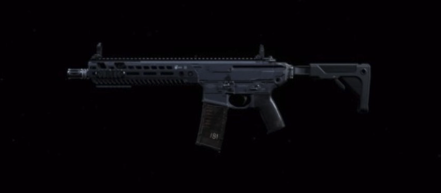
Boca de Cañon: Silenciador Monolítico
Mira: Mira x3 VLK
Cañón: tempus Tirador
Cargador: cargado de 60 balas
Acople: Empuñadura Frontal de comando
M4A1
Modo de disparo: Automatico
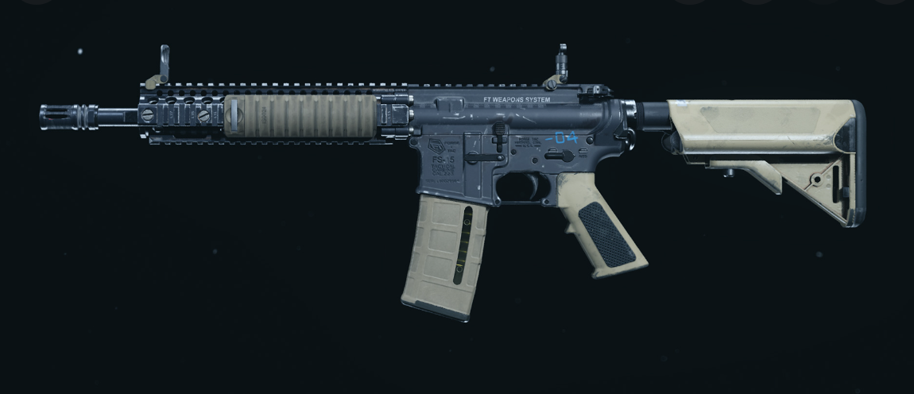
Boca de Cañon: Silenciador Monolítico
Mira: Mira x3 VLK
Cañón: M16 granadero de serie
Cargador: cargado de 60 balas
Acople: Empuñadura Frontal de comando
CR-56AMAX
Modo de disparo: Automatico
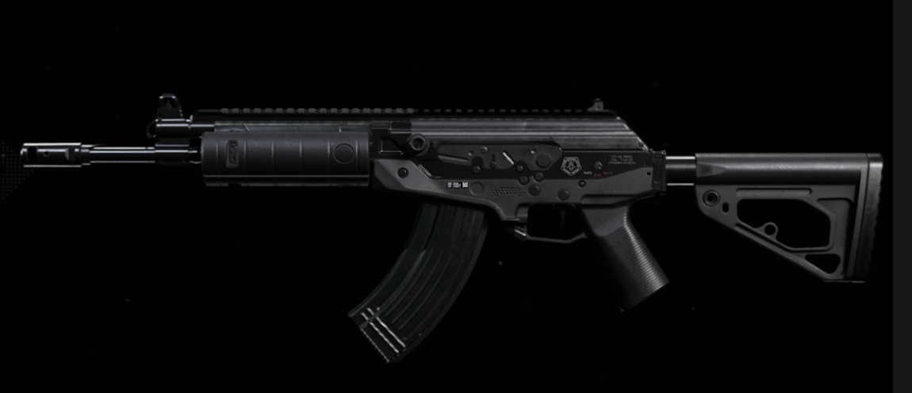
Boca de Cañon: Silenciador Monolítico
Mira: Mira x3 VLK
Cañón: XRK Zodiac S440
Cargador: cargado de 45 balas
Acople: Empuñadura Frontal de comando
AN-94
Modo de disparo: Automatico/Semi automatico
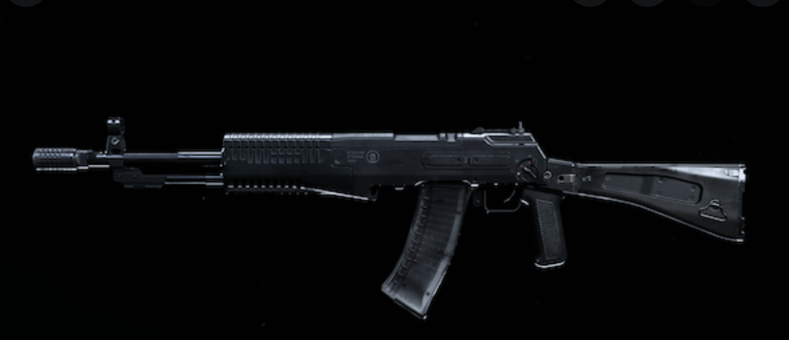
Boca de Cañon: Silenciador Monolítico
Mira: Mira x3 VLK
Cañón: AN-94 estandar X de 438 mm
Cargador: cargado de 45 balas
Acople: Empuñadura Frontal de comando
FAL-M
Modo de disparo: SemiAutomatico
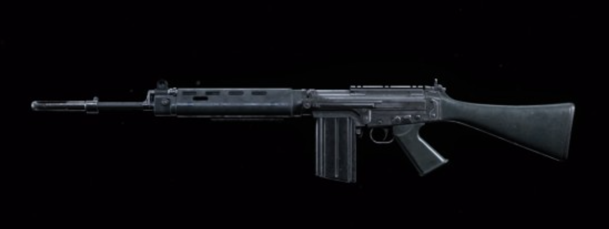
Boca de Cañon: Silenciador Monolítico
Culata: Sin Culata
Cañón: XRK de tirador
Cargador: cargado de 30 balas
Acople: Empuñadura Frontal de Mercenario
GRAU5.56
Modo de disparo: Automatico
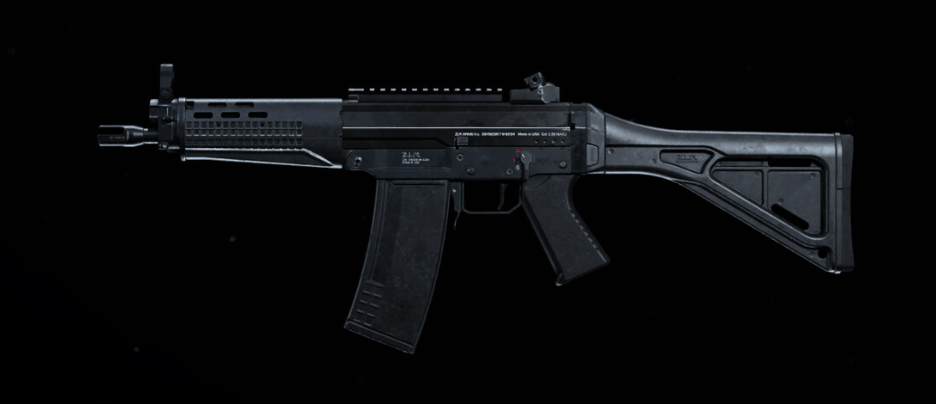
Boca de Cañon: Silenciador Monolítico
Mira: Mira x3 VLK
Cañón: Tempus arcangel de 67.1 cm
Cargador: cargado de 60 balas
Acople: Empuñadura Frontal de comando
FR 5.56
Modo de disparo: Rafagas
Boca de Cañon: Silenciador Monolítico
Mira: Mira x3 VLK
Cañón: FR de francotirador de 62 cm
Cargador: cargado de 60 balas
Acople: Empuñadura Frontal de comando
FN Scar 17
Modo de disparo: Automatico
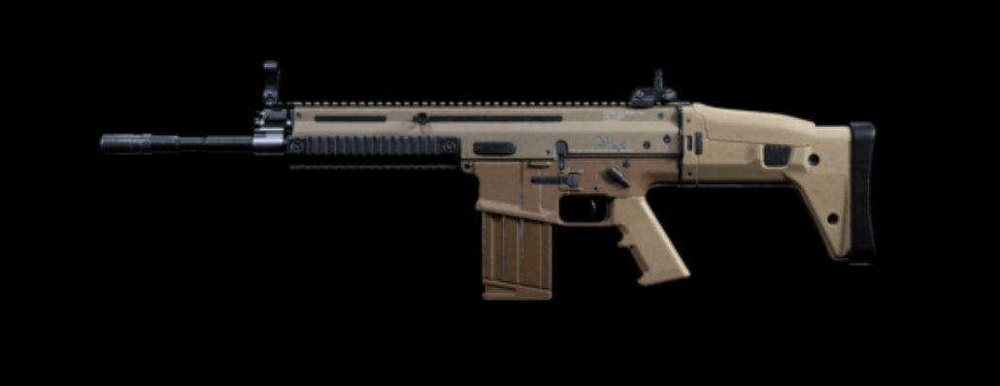
Boca de Cañon: Silenciador Monolítico
Mira: Mira Holografica de los cuerpos de combate
Cañón: FORGE TAC de 50.8 cm LB
Cargador: cargado de 30 balas
Acople: Empuñadura Frontal bipode
RAM-7
Modo de disparo: Automatico
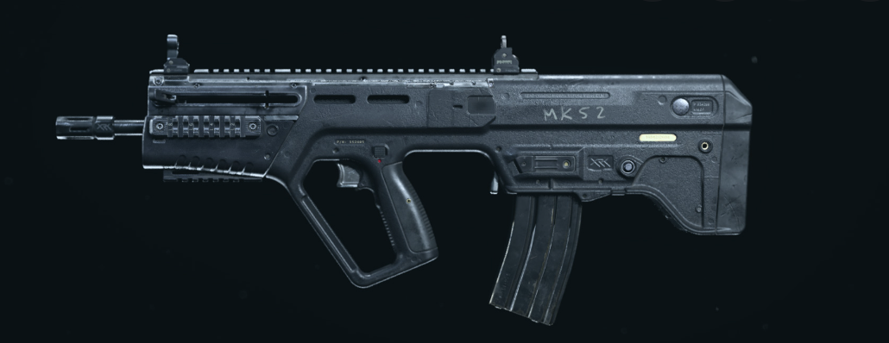
Boca de Cañon: Silenciador Monolítico
Mira: Mira Holografica de los cuerpos de combate
Cañón: FSS Ranger
Cargador: cargadores de 50 balas
Acople: Empuñadura Frontal de combate
AS VAL
Modo de disparo: Automatico
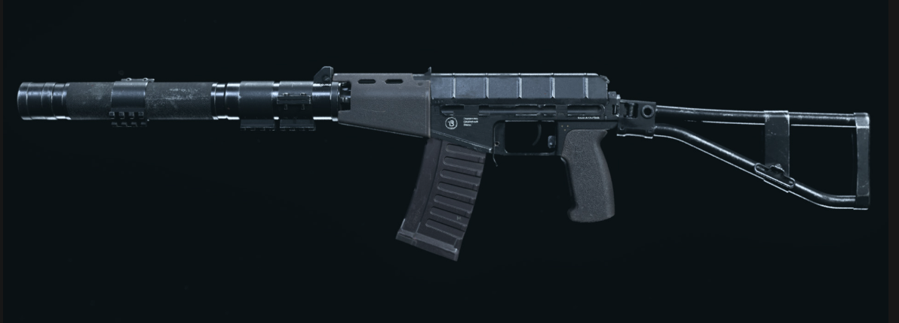
Culata: VLK Strelok
Mira:Mira reflex Solozero mini
Cañón: VLK Osa de 200 mm
Cargador: cargadores de 30 balas
Acople: Empuñadura Frontal de Mercenario
AK-47
Modo de disparo: Automatico
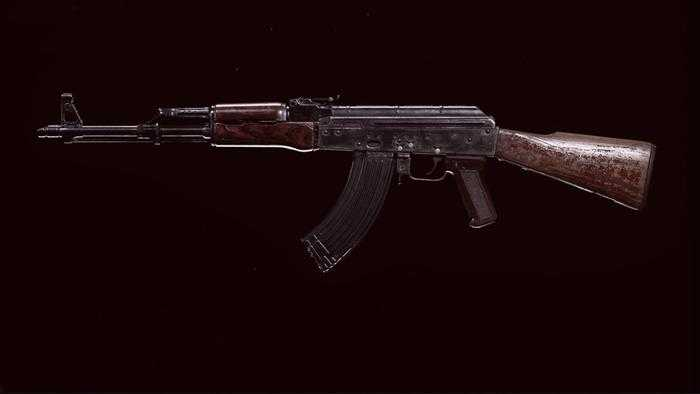
Boca de Cañon: Silenciador Monolítico
Mira: Mira x3 VLK
Cañón: Rumano de 58.4 cm
Cargador: cargadores de 40 balas
Empuñadora trasera: Adhesivo engomado
Odem
Modo de disparo: Automatico
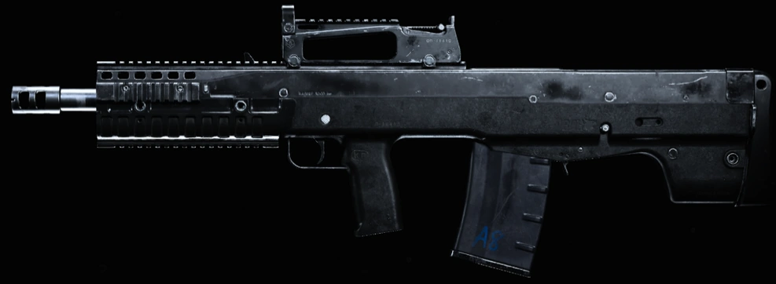
Boca de Cañon: Silenciador Coloso
Mira: Mira x3 VLK/holografica de los cuerpos de combates
Cañón: Odem estandar de 810 mm
Cargador: cargadores de 25 balas
Acople: Empuñadora frontal de comando
2. Armamento: SubFusil
AUG
Modo de disparo: Automatico
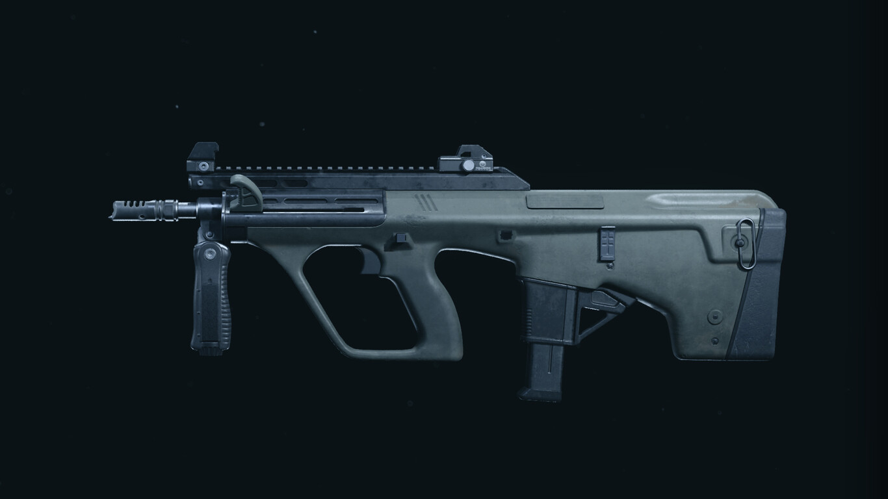
Boca de Cañon: Silenciador Monolítico
Empuñadura trasera: Adhesivo granulado
Cañón: Ligero de 407 mm
Cargador: Cargador OTAN 5.56 con 30 balas
Acople: Empuñadora frontal de mercenario
MP5
Modo de disparo: Automatico
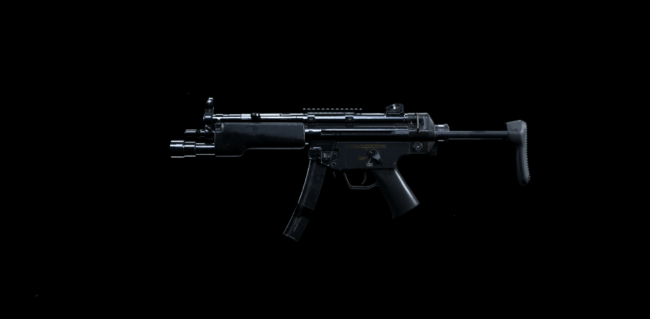
Boca de Cañon: Silenciador Monolítico
Laser: Laser de 5 mW
Cañón: FSS Ligero
Cargador: Cargador de 45 balas
Acople: Empuñadora frontal de mercenario
CX-9
Modo de disparo: Automatico
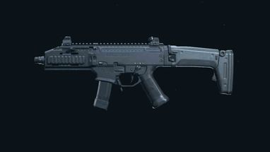
Mira: Reflez iG mini
Ventaja: Prestidigitacion
Cañón: FSS Ligero
Cargador:Tambor de 50 balas
Acople: Empuñadora frontal de comando
UZI
Modo de disparo: Automatico
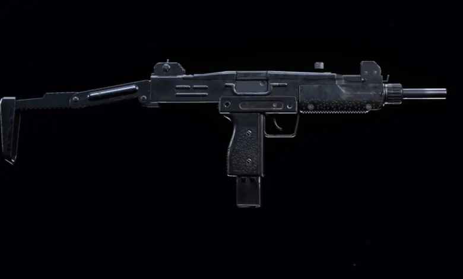
Laser: Laser de 5mW
Ventaja: Prestidigitacion
Cañón: FSS de Carabina Pro
Cargador: cargador de 32 balas AE de calibre 41
Acople: Empuñadora frontal de mercenario
STRIKER 45
Modo de disparo: Automatico
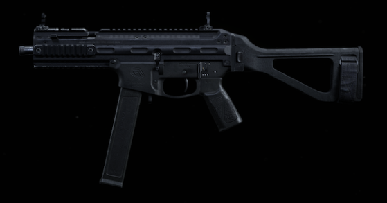
Laser: Laser tactico
Boca de cañon: Silenciador monolítico
Cañón: Acero inoxidable de 400 mm
Cargador: cargador de 45 balas
Acople: Empuñadora frontal de comando
ISO
Modo de disparo: Automatico
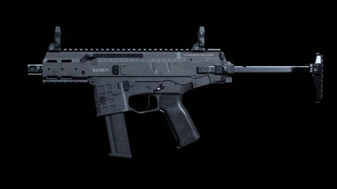
Mira: Mira Reflex IG mini
Laser: Laser tactico
Cañón: FSS Nightshade
Cargador: cargador de 50 balas
Acople: Empuñadora frontal de comando
MP7
Modo de disparo: Automatico
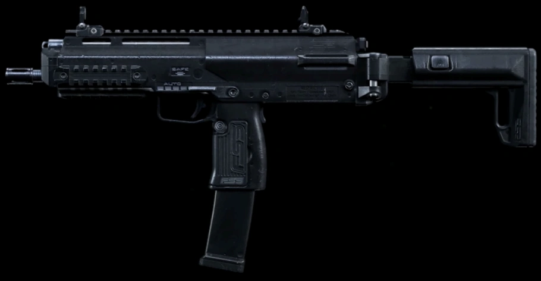
Boca de cañon: Silenciador monolitico
Laser: Laser de 5 mW
Cañón: FSS de reconocimiento
Cargador: cargador de 60 balas
Culata: Sin culata
Fennec
Modo de disparo: Automatico
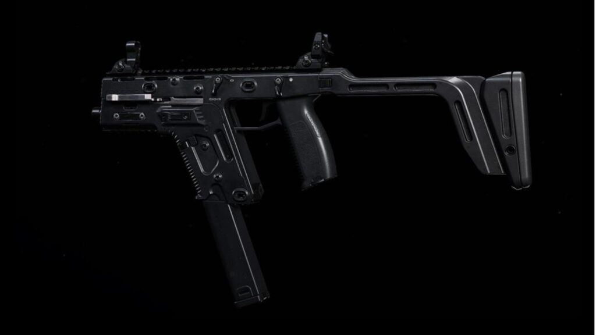
Boca de cañon: ZLR Sabre
Acople: Empuñadura frontal de comando
Cañón: ZLR Apex de 40.6 cm
Cargador: cargadores de tambor de 40 balas
Culata: Culata para cortar distancia FORGE TAC
P90
Modo de disparo: Automatico
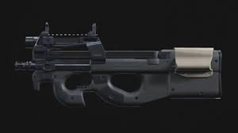
Boca de cañon: Silenciador monolitico
Cañón: FORGE TAC retribucion
Laser:Laser tactico
Ventaja: Prestidigitacion
Culata: correa moderna
BIZON
Modo de disparo: Automatico
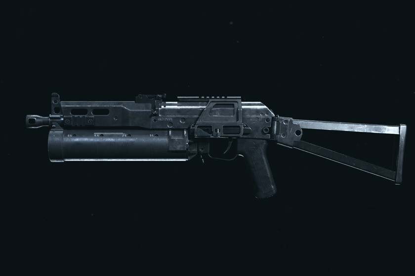
Boca de cañon: Silenciador monolitico
Cañón: Acero de 22.1 cm
Laser: Laser de 5 mW
Ventaja: Prestidigitacion
Culata: Sin culata
3. Armamento: Escopetas
JAK-12
Boca de cañon: FORGE TAC merodeador
Cañón: ZLR J-3600 Torrent
Laser: Laser de 5 mW
Ventaja: Prestidigitacion
cargador: Prestidigitacion
725
Boca de cañon: Silenciador monolitico
Cañón: Cañon recortado
Laser: Laser de 5 mW
Ventaja: Prestidigitacion
culata: culata recortada
Rogue VLK
Boca de cañon: FORGE TAC merodeador
Cañón: Señor de la guerrra de 40.6 cm
Laser: Laser de 5 mW
Cargador: Aliento de dragon de 8 cartuchos
Empuñadura de corredera: empuñadura de carreras XRK
Modelo 680
Boca de cañon: FORGE TAC merodeador
Cañón: Liberador XRK de 45.7 cm
Acople: Empuñadura frontal de mercenario
Culata: Sin culata
Cargador: Cartucho de balas
Origin 12
Boca de cañon: Silenciador monolitico
Cañón: FORGE TAC empalador
Laser: Laser de 5mW
Culata: Sin culata
Cargador: Cargador de 12 balas
R9
Boca de cañon: Silenciador monolitico
Cañón: FORGE TAC centinela
Laser: Laser de 5mW
Culata: Corta distancia FTAC pro
Cargador: Cargador de aliento de dragon
4. Armamento: Ametralladora Ligeras
Bruen Mk9
Modo de disparo: Automatico
Boca de cañon: Silenciador monolitico
Cañón: XRK Summit de 68.1 cm
Mira: Mira holograficca de los cuerpos de combate
Acople: Empuñadora frontal de comando
Cargador: Cargador de 60 balas
M91
Modo de disparo: Automatico
Laser: Laser tactico
Culata:XRK striker
ventaja: Prestidigitacion
Acople: Empuñadora frontal de comando
Empuñadura trasera: Adhesivo punteado
FINN
Modo de disparo: Automatico
Boca de cañon: Silenciador monolitico
Cañon: XRK Longshot Advantage
Laser: Laser tactico
Mira: Mira holografica de combate
Acople: Empuñadora frontal de comando
PKM
Modo de disparo: Automatico
Boca de cañon: Silenciador monolitico
Cañon: cañon pesado de 65.7 cm
Laser: Laser tactico
Mira: Mira x3 VLK
Acople: Empuñadora rapida
Holger 26
Modo de disparo: Automatico
Boca de cañon: Silenciador monolitico
empuñadura trasera: Adhesivo engomado
Laser: Laser tactico
Mira: Mira x3 VLK
Acople: Enpuñadura fontral de operador
SA87
Modo de disparo: Automatico
Boca de cañon: Silenciador monolitico
empuñadura trasera: Adhesivo engomado
Laser: Laser tactico
Mira: Mira x3 VLK
Acople: Enpuñadura fontral de operador
MG34
Modo de disparo: Automatico
Boca de cañon: Silenciador monolitico
empuñadura trasera: Adhesivo engomado
Laser: Laser tactico
Mira: Mira x3 VLK
Acople: Enpuñadura fontral de operador
RAAL
Modo de disparo: Automatico
Boca de cañon: RAAL de nucleo monolitico
cañon: RAAL Lineal de ruptura de 81.3 cm
Laser: Laser tactico
Mira: Mira x3 VLK
Acople: FFS oblicuo
5. Armamento: Fusil Tactico
SP-R 208
Boca de cañon: Silenciador monolitico
cañon: SP-R de 66 cm
Laser: Laser tactico
Mira: Solozero SP-r 28 mm
Cargador: Cargador de calibre de 300 norma x5
EBR-14
Boca de cañon: Silenciador monolitico
cañon:FORGE TAC de precision de 55.9 cm
Acople: Empuñadura frontal de comando
Mira: Mira x3 VLK
Cargador: Cargador de 20 balas
SKS
Boca de cañon: Silenciador monolitico
cañon: FSS M59/66 de 55.8 cm
Acople: Empuñadura frontal de comando
Mira: Mira PU
Cargador: Cargador de 30 balas
Carabina MK2
Boca de cañon: Silenciador monolitico
cañon: FSS de 61 cm estandar
Laser: Laser tactico
Mira: Mira de francotirador
Empuñadura trasera: Adhesivo punteado
Kar98
Boca de cañon: Silenciador monolitico
culata: Peine FTAC Sport
Laser: Laser tactico
Mira: Mira de francotirador
Empuñadura trasera: Adhesivo punteado
Ballesta
arco: XRK Thunder de 91 kg
Proyectil: Proyectiles FTAC Fury de 50.8 cm
ventaja: Prestidigitacion
Mira: Reflex IG mini
Acople: Empuñadura FTAC veloz
6. Armamento: Fusil de Precision
AX-50
Boca de cañon: Silenciador monolitico
cañon: Cañon de fabrica de 81.3 cm/li>
Laser: Laser tactico
Culata: Singuard Arms asesino
Empuñadura trasera: Adhesivo punteado
AX-50
Boca de cañon: Silenciador monolitico
cañon: HDR pro de 68.3 cm
Laser: Laser tactico
Culata: Culata FSS Normand
Cargador: Cargador de 7 balas
Dragunov
Boca de cañon: Silenciador monolitico
cañon: cañon ampliado de 660 mm
Laser: Laser tactico
Culata: FTAC cazador explorador
Cargador: Cargador de 20 balas
Rytec AMR
Boca de cañon: Silenciador de Rytec AMR
cañon: FTAC Seven Straight
Laser: Laser tactico
Culata: FTAC Trekker
Cargador: Cargador de 25 x 59 mm de termita x5
7. Armamento: Armas Cortas
Renetti
Boca de cañon: Silenciador monolitico
Sistema de gatillo: Gatillo ligero
Laser: Laser de 5mW
Ventaja: Duales
Cargador: Cargador de 21 balas
.50 GS
Empuñadura trasera: Adhesivo granulado
Sistema de gatillo: Gatillo Competitivo
Laser: Laser de 5mW
Ventaja: Duales
Cargador: Cargador de 13 balas
.357
cañon: Largo de cal. 357
Sistema de gatillo: Gatillo ligero
Laser: Laser de 5mW
Ventaja: Duales
Cargador: disparo de perdigones
SYKOV
Boca de cañon: Silenciador monolitico
cañon: Sorokin automatico de 140 mm
Laser: Laser tactico
Empuñadura trasera: VLK Elita
Cargador: Cargador de 80 balas
X16
Boca de cañon: Silenciador monolitico
Sistema de gatillo: Gatillo ligero
Laser: Laser de 5mW
Ventaja: Duales
Cargador: Cargador de 26 balas
******************************************
1911
Boca de cañon: Silenciador monolitico
Sistema de gatillo: Gatillo ligero
Laser: Laser de 5mW
Ventaja: Duales
Cargador: Cargador de 26 balas
******************************************
1911
Boca de cañon: Silenciador monolitico
Sistema de gatillo: Gatillo ligero
Laser: Laser de 5mW
Ventaja: Duales
Cargador: Cargador de 32 balas
Anterior
Siguiente